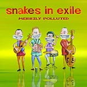

Acoustic, Harmonic & rather Celtic
Band /
Music /
Events /
Photo /
Contact
Songs And Salads
Time Flies When You're Having Fun
Second Skin
Merrily Polluted
Paddies Off Course
A Dressing Room Session

'Merrily Polluted' was born in May 2002. Like 'Second Skin', it was released with the Flemish folklabel Wild Boar Music. The CD was produced by Erwin Libbrecht (Kadril, Wild Boar Music).
TrackList
Intro Sigaar Zeg*
Payday
Merrily Polluted
A Tone-Deaf Young Minstrel
She and I
Seize the Night
One of Those
Town of Kiandra
The Sun is on its Way
Polly on the Shore
A Midsummernight's Dream
Dangerous Liaisons
Bohemiens
Bless her Cotton Socks
The Parting Glass